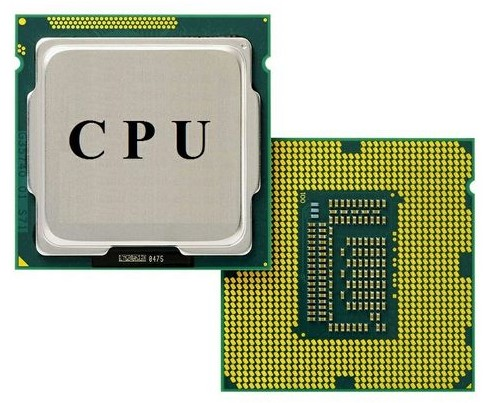
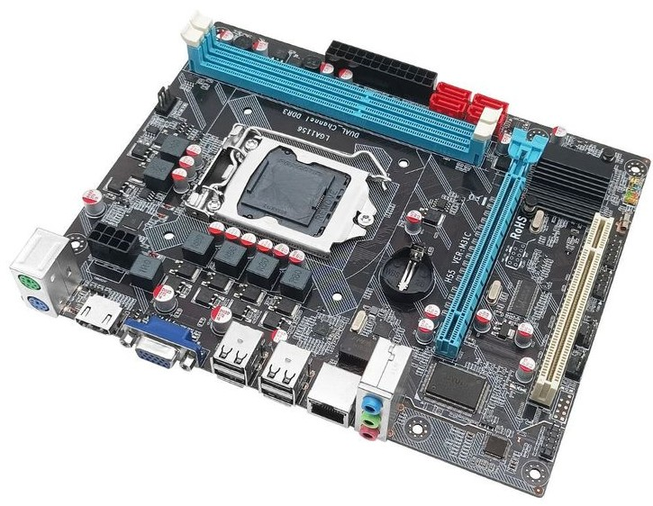
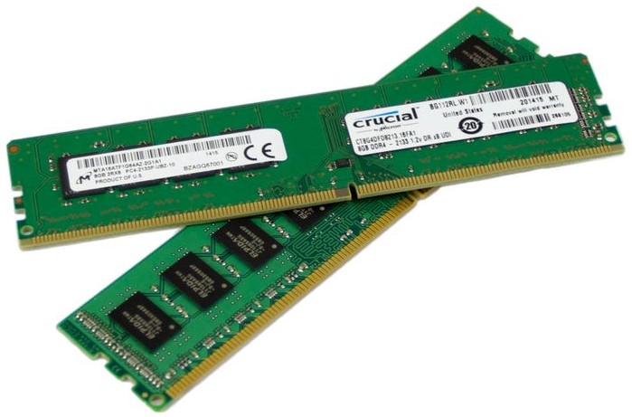
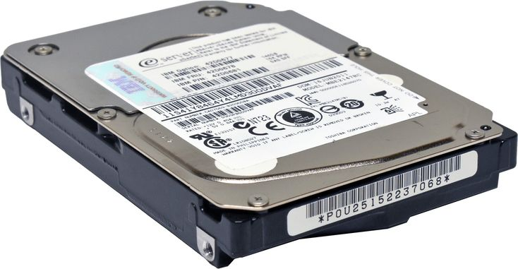
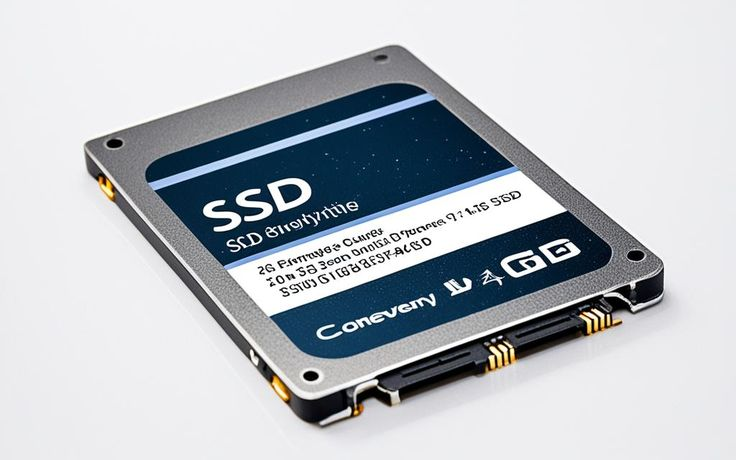
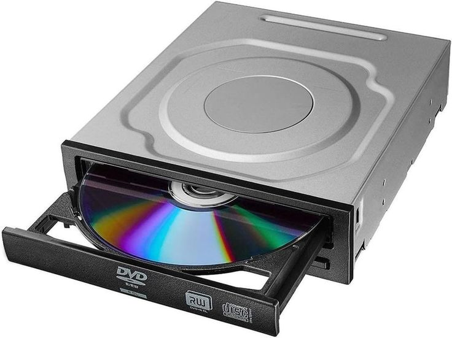
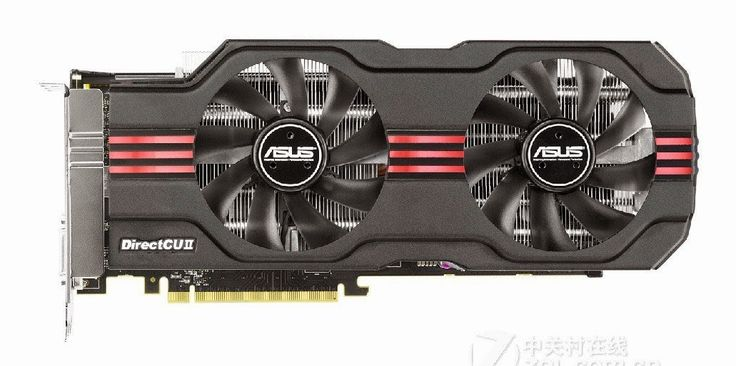
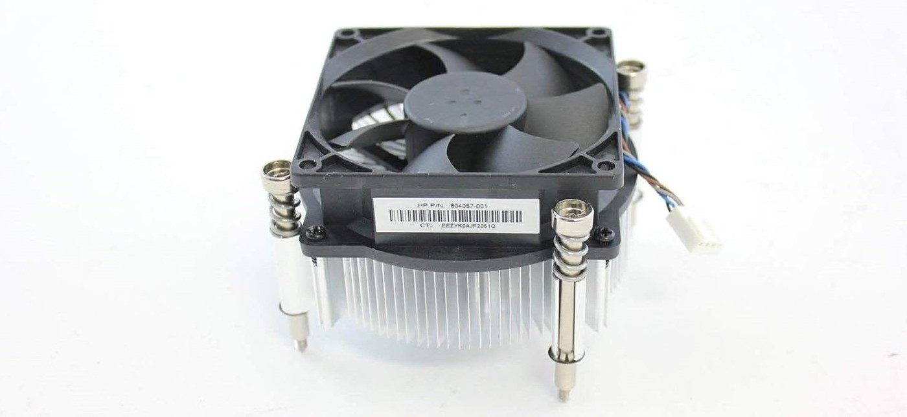

Mengenal Hardware komputer
Di era digital saat ini, kita sering mendengar istilah "Coding" atau "Software". Namun, perlu diingat bahwa perangkat lunak yang canggih tidak akan berjalan tanpa adanya Hardware (Perangkat Keras). Hardware adalah pondasi fisik yang mengeksekusi setiap baris kode yang kita buat.

Di Artikel saya kali ini, saya akan membahas tentang Perangkat Keras Komputer secara rinci mulai dari fungsi utama, analogi, serta gambar setiap perangkat keras (Hardware).
#1 Central Processing Unit (CPU)

CPU atau Central Processing Unit sering disebut sebagai otak komputer. Semua aktivitas yang terjadi di dalam komputer mulai dari membuka aplikasi, mengetik, hingga menjalankan game semuanya diproses oleh CPU. Tanpa CPU komputer tidak bisa bekerja sama sekali karena tidak ada komponen yang mengatur dan menjelaskan perintah.
Fungsi utama CPU adalah mengelola data da intruksi yang diberikan oleh pengguna maupun sistem operasi. Setiap kali kita mengklik sesuatu, CPU akan menerima perintah tersebut ke komponen seperti RAM, Kartu Grafis, atau Penyimpanan. Proses inilah yang membuat komputer bisa merespons lebih cepat.
Selain memproses data, CPU juga berperan sebagai pengatur kerja seluruh komponen komputer. CPU menentukan kapan RAM digunakan, kapan data diambil dari hard disk atau SSD, dan bagaimana hasilnya ditampilkan ke layar. Semua komponen bekerja secara terkoordinasi karena ada CPU yang mengendalikannya.
kecepatan dan kemampuan CPU sangat berpengaruh terhadap performa komputer. Semakin baik spesifikasi CPU, semakin cepat komputer menjalankan aplikasi, multitasking dan pekerjaan berat seperti editing atau gaming. Itulah sebabnya CPU menjadi salah satu komponen yang paling penting saat memilih atau merakit komputer.
Singkatnya, CPU adalah pusat kendali yang membuat komputer bisa berpikir, bekerja dan menjalankan berbagai tugas sesua perintah pengguna.
#2 Motherboard
Motherboard atau sering disebut papan induk adalah komponen utama yang menjadi tempat berkumpulnya semua perangkat keras komputer. Di sinilah CPU, RAM, Kartu Grafis, Penyimpanan, dan berbagi komponen lain terhubung dan saling berkomunikasi. Tanpa motherboard, komponen-komponen tersebut tidak akan bisa bekerja bersama.
Fungsi motherboard adalah sebagai penghubung dan pengatur jalur komunikasi antar komponen. Semua data yang diproses oleh CPU akan melewati motehrboard terlebih dahulu sebelum diteruskan ke RAM, Penyimpanan, atau perangkat lain. Karena itu, motehrboard memiliki peran penting dalam menjaga kestabilan dan kelancaran sistem komputer.
Selain mejadi penghubung, motherboard juga menyediakan berbagai slot dan port. Mulai dari slot RAM, Socket processor, Slot PCIe untuk VGA, Hingga port USB, Audio dan jaringan. Kelengkapan dan kualitas fitur motherboard akan sangat mempengaruhi fleksibilitas komputer terutama saat ingin melakukan upgrade di masa depan.
motehrboard juga berperan dalam mengatur distribusi daya ke seluruh komponen. Melalui rangkaian khusus, motherboard memastikan setiap komponen mendapatkan listrik yang sesuai agar bisa bekerja dengan aman dan stabil. Jila kualitas motehrboard kurang baik, performa komputer bisa tidak maksimal atau bahkan sering mengalami eror. Di Motherboard juga tertanam chip Bios, disinilah bios disimpan, bukan dari CPU, RAM atau Perangkat Penyimpanan melainkan dari motherboard itu sendiri
Singkatnya, Motherboard adalah fondasi dari sebuah komputer> Komponen boleh diganti atau di upgrade, tetapi motherboard tetap menjadi pusat yang menentukan arah kompatibilitas, stabilitas, dan arah pengembangan sebuah sistem komputer.
#3 Random Acsess Memory (RAM)
RAM atau Random Access Memory adalah komponen komputer yang berfungsi sebagai tempat penyimpanan data sementara saat sistem sedang berjalan. Data yang ada di RAM biasanya berasal dari aplikasi, sistem operasi, dan proses yang sedang aktif agar bisa diakses dengan cepat oleh CPU.
Peran RAM sangat penting dalam menentukan kelancaran komputer. Semakin besar kapasitas RAM, sekain banyak aplikasi yang dijalankan secara bersamaan tanpa membuat sistem jadi lambat. Saat RAM penuh, komputer akan terasa berat karena harus memindahkan data ke pennyimpanan yang jauh lebih lambat seperti HDD atau SSD.
Kecepatan RAM juga berpengaruh pada performa. RAM dengan frekuensi yang lebih tinggi mampu mengirim dan menerima data lebih cepat, sehingga proses seperti membuka aplikasi, multitasking, hingga gaming bisa terassa responsif. Namun, kecepatan RAM tetap harus menyesuaikan dengan dukungan motherboard dan processor
Selain kapasitats dan kecepatan, RAM juga harus kompatibel dengan sistem. Jenis RAM seperti DDR3, DDR4, dan DDR5 tidak bisa dipasang sembarangan karena memiliki bentuk dan teknologi yang berbeda. Karena itu pemilihan RAM harus disesuaikan dengan motherboard agar komputer dapat bekerja secara optimal.
Secara sederhana, RAM dapat diibaratkan sebagai meja kerja. Semakin luas meja tersebut, semakin banyak pekerjaan yang bisa dilakukan denagn nyaman dan cepat. Tanpa RAM yang cukup, komputer tetap bisa menyala, tetapi performanya tidak akan maksimal
#4 Hard Disk Drive (HDD)
HDD atau Hard Disk Drive adalah perangkat penyimpanan utama pada komputer yang berfungsi untuk menyimpan data secara permanen, seperti sistem operasi, aplikasi, dokumen, foto dan vidio. Berbeda dengan RAM, data dalam HDD tidak akan hilang meskipun komputer dimatikan. HDD bekerja menggunakan piringan magnetik yang berputar dan membaca data secara mekanis
Keunggulan utama HDD terletak pada kapasitasnya yang besar dengan harga yang relaif terjangkau. Karena itu, HDD masih banyak digunakan untuk menyimpan file berukuran besar seperti vidio, arsip dan game. Namun karena menggunakan komponen mekanik, kecepatan baca dan tulis HDD lebih lambat dibandingkan SSD
Dalam penggunaan sehari-hari, HDD cocok dijadikan media penyimpanan data, sementara sistem operasi lebih optimal dipasang di SSD. Kombinasi HDD dan SSD sering digunakan agar komputer memiliki kapasitas besar sekaligus performa yang lebih cepat.
#5 Solid Sata Drive (SSD)
SSD atau Solid Sata Drive adalah media penyimpanan modern yang berfungsi sama seperti HDD, yaitu menyimpan sistem operasi, aplikasi, dan data. Bedanya, SSD tidak menggunakan piringan atau komponen bergerak, melainkan chip memori, sehingga proses baca dan tulis data jauh lebih cepat.
Karena kecepatannya, SSD membuat komputer terasa lebih responsif. Waktu booting jadi lebih singkat, aplikasi terbuka lebih cepat, dan proses transfer data juga lebih ngebut. Selain itu, SSD lebih tahan guncangan dan cenderung lebih awet karena tidak memiliki bagian mekanik seperti HDD.
Walaupun harga SSD masih dibilang cukup mahal darpiada HDD dengan kapasitas yang sama, Kebanyakan user yang mau upgrade pc atau rakit pc biasanya membeli SSD untuk sistem operasi dan HDD untuk menyimpan data.
#6 Optical Drive
Optical Drive adalah perangkat komputer yang digunakan untuk membaca dan menulis data dari media optik seperti CD, DVD, atau Blu-ray. Dulu perangkat ini hampir selalu ada di komputer atau laptop jadul, karena banyka software, game, dan sistem operasi didistribusikan lewat kepingan disc.
Seiring berkembangnya teknologi, fungsi Optical Drive mulai tergeser oleh flashdisk dan internet. Proses instalasi software kini lebih sering dilakukan lewat unduhan online atau USB karena lebih cepat dan praktis. Akibatnya, banyak laptop dan PC modern yang sudah tidak lagi menyertakan Optical Drive bawaan.
Meski begitu, Optical Drive masih berguna untuk kebutuhan tertentu, seperti membaca arsip lama, memutar DVD, atau burning data ke disc. Untuk yang masih membutuhkannya, sekarang tersedia optical Drive eksternal berbasis USB yang bisa digunakan tanpa harus memasang perangkat internal.
#7 Video Graphics Array (VGA) / Graphics Processing Unit (GPU)
VGA atau GPU adalah komponen komputer yang bertugas mengolah dan menampilkan grafis ke layar. Komponen ini sangat berperan dalam menampilkan gambar, video, animasi, hingga visual pada game dan aplikasi desain. Tanpa GPU, tampilan grafis komputer tidak akan berjalan dengan optimal.
GPU terbagi menjadi dua jenis, yaitu Integrated dan Dedicated. GPU Integrated biasanya menyatu dengan CPU dan cukup untuk kebutuhan ringan seperti browsing, nonton video, atau kerja kantor. Sementara GPU dedicated memiliki memori sendiri dan performa yang jauh lebih kuat, sehingga cocok untuk gaming, editing video, desain grafis, dan rendering.
Dengan adanya GPU yang mumpuni, beban kerja grafis tidak sepenuhnya ditangani CPU, sehingga performa sistem jadi seimbang. Pemilihan VGA yang tepat sangat berpengaruh komputer, terutama untuk aktivitas yang membutuhkan tampilan visual berat dan detail tinggi.
#8 HeatShink
Heatshink adalah komponen yang berfungsi untuk menyerap dan membuang panas dari prosesor atau VGA agar suhunya tetap stabil. Panas dari chip akan dialirkan ke heatshink, lalu di lepaskan ke udara sehingga komponen tidak cepat panas dan tetap aman digunakan
Biasanya heatshink dipadukan dengan kipas untuk membantu aliran udara. jika pendinginan tidak optimal, performa komputer bisa mennurun atau bahkan mengalami ovrerheat, jadi heatshink punya peran penting dalam menjaga kinerja sistem
#9 Power Supply Unit (PSU)

PSU atau Power Supply Unit adalah komponen yang berfungsi menyalurkan listrik dari sumber listrik ke seluruh komponen komputer. PSU mengubah arus listrik menjadi tegangan yang dibutuhkan oleh motherboard, CPU, VGA dan perangkat lainnya agar bisa bekerja dengan normal.
PSU yang berkualitas penting untuk menjaga kestabilan dan keamanan sistem. Jika PSU tidak stabil atau dayanya kurang, komputer bisa sering mati mendadak atau bahkan merusak komponen lain. Karena itu, Memilih PSU yang sesuai sangat berpengaruh pada performa dan keawetan PC.
#10 System Fan

Sistem fan adalah susunan kipas pada komputer yang berfungsi mengatur aliran udara dalam casing agar panas bisa dibuang dengan baik. Fan membantu menjaga suhu komponen seperti CPU dan VGA tetap stabil saat komputer bekerja.
Dalam sistem fan terdapat dua jenis fan/kipas yaitu Intake Fan, kipas yang berfungsi menarik udara dingin dari luar ke dalam casing, dan Exhaust (Forward) Fan, yaitu kipas yang membuang udara panas dari dalam casing ke luar.

Gibran Rakabuming Raka
Ya baik saya akan kasih komentar tentang Website ini, selebihnya bagus dan ganteng kaya saya wkwkwkwkwk.
Sahroni
Kembalikan flasdisk sayaaa. Siapa yang menemukan dan mengembalikannya kepada saya akan saya kasih 100t hasil dari korupsi saya. Itu flasdisk isinya aib saya semua.
Reply
Bahlil
Saya bahlil, semua bensin atau bahan bakar di seluruh indonesia akan saya campur dengan ethanol 100%, biarin motor kalian pada rusak wokwokwokwok mampuss, IPK tinggi buat apa, liat saya IPK rendah masih bisa jadi mentri.
Reply
Ngab Owi
Halo saya Jokowi biasa dipanggil ngab owi, btw IKN dah selesai nak?
Reply
Ucok
Gw ucok, bawa gw ke indo anj biar gw acak acak tuh indo kek los santos di masa prime gw. Eh gajadi soalnya indo emang dah hancur, korupsi di mana mana.
Reply
Ipin
Liat ni malaysia bagus ga kek indo
Reply
Harmonie
Apa gw sihir aja ya seklaian nih pemerintah indo, kek tai soalnya. Gw ganti jadi Hougwarts ae.
Reply